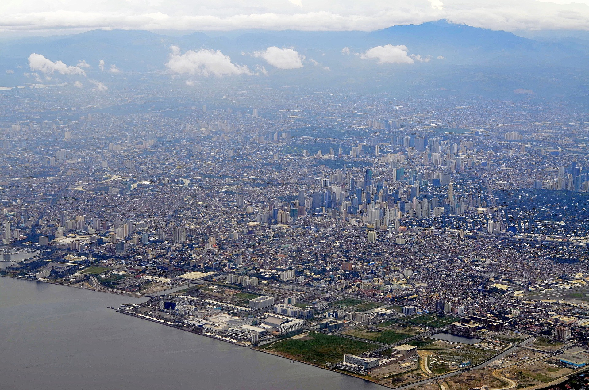
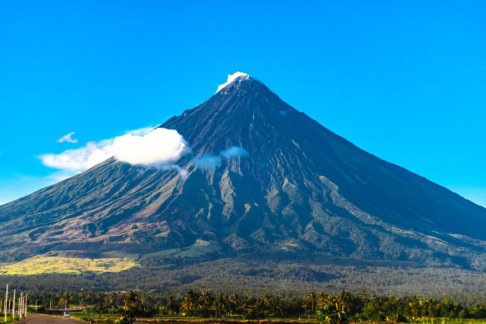

Figure 1: Luzon is the largest and most populous island in the Philippines. It's located in the northern part of the archipelago and is home to the country's capital, Manila, as well as Quezon City, the most populous city. Luzon is known for its beautiful beaches, stunning mountains, and rich cultural heritage.

Figure 2: Mayon Volcano, also known as Mount Mayon located in Luzon, is an active stratovolcano located in the province of Albay, Bicol, Philippines. It is a popular tourist destination known for its near-perfect conical shape, which is why it is called the "world's most perfect volcanic cone.Figure 3: The wind farm uses 20 units of 70-meter high Vestas V82 1.65 MW wind turbines, arranged in a single row stretching along a 9-kilometer shoreline of Bangui Bay, facing the South China Sea.